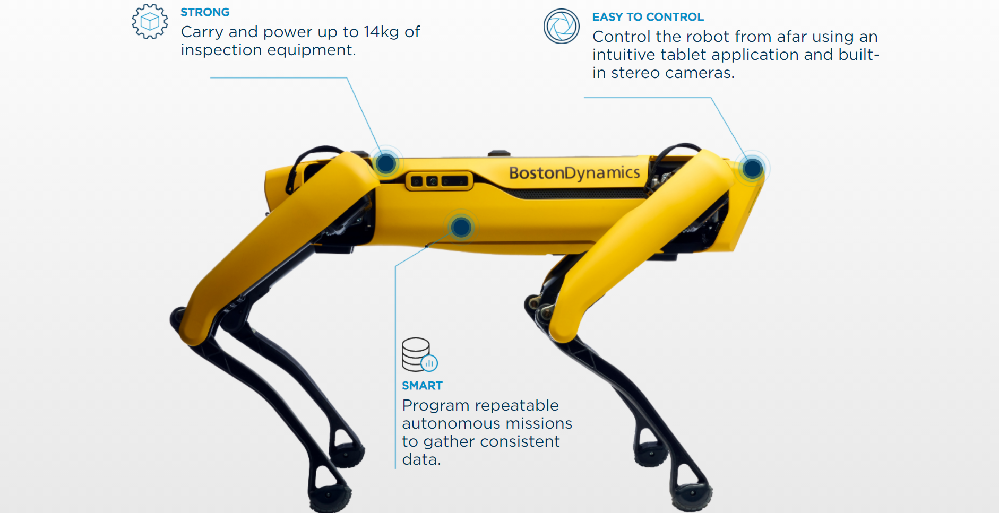

ABOUT OUR COMPANY
Boston Dynamics is a world leader in mobile robots, tackling some of the toughest robotics challenges. We combine the principles of dynamic control and balance with sophisticated mechanical designs, cutting-edge electronics, and next-generation software for high-performance robots equipped with perception, navigation, and intelligence. Boston Dynamics has an extraordinary and fast-growing technical team of engineers and scientists who seamlessly combine advanced analytical thinking with bold engineering and boots-in-the-mud practicality.
FAQS ABOUT BOSTON DYNAMICS
Why does Boston Dynamics make legged robots?
Boston Dynamics focuses on creating robots with advanced mobility, dexterity and intelligence. We have long held that mobility
sufficient to access both the natural and the built world required legs. We began the pursuit of this dream over 30 years ago, first in academia
and then as part of Boston Dynamics because it was an exciting technical challenge and because to build a highly mobile robot required it. We wanted
to build a robot that could go where people go. The commonly referred to “dull, dirty and dangerous” tasks don’t occur solely on a neatly organized factory
floor, they pop up in the natural world and in existing infrastructure. These are places where being effective requires deftly maneuvering through rocky trails,
staircases, catwalks, doors or narrow cluttered passages. The environment can’t be conformed to the machine, and therefore the machine must be capable in the environment
as it comes.
While we take the natural world as inspiration for our robots, the design is ultimately motivated by functionality. Our robots end up moving like humans and animals not
because we designed them to look like humans and animals but because we made them balance. Balance and dynamic motion are characteristics we have previously only seen in
animals. It is this organic quality of dynamically stable motion that people tend to associate with lifelike movement. Partly because of the benefits of dynamic motion, our
robots can navigate tough unstructured, unknown or antagonistic terrain with ease. Wheeled and tracked robots are limited by stairs, gaps, ground-level obstructions such as
cabling and staged materials and minor height differences in flooring. These environments don't present the same challenges for legged robots.
Who funds Boston Dynamics?
Boston Dynamics is a privately held corporation, whose sole outside shareholder is Softbank. Softbank and Boston Dynamics have agreed to enter into a transaction in which Hyundai Motor Group will acquire a majority interest in Boston Dynamics at some point in the future. In the first twenty years of our history, we proudly worked with research funding from US Government agencies such as DARPA & the Army to develop robotic technology. That funding helped us to create the technical foundations for much of our present commercial work, similar to how DARPA funding led to other innovative technologies, such as the internet & GPS. Boston Dynamics occasionally receives offers of external research funding which the company considers based on alignment of the stated research goals with our internal goals to develop business applications in which robots enhance the productivity and safety of workers.
OUR PRODUCTS
TRANSFORMATIVE MOBILITY
Spot is an agile mobile robot that navigates terrain with unprecedented mobility, allowing you to automate routine inspection tasks and data capture safely, accurately, and frequently.
The results? safer, more efficient and more predictable operations.
OUR RESOURCES

CASE STUDY
NATIONAL GRID
Energy giant National Grid is using Spot to keep employees safe and ensure uptime at a critical facitlity.

VIDEO INTERVIEW
KIDD CREEK MINE
Spot performs inspection in the Kidd Creek Mine, enabling operators to keep their distance from hazards.

VIDEO
DEVELOPER SPOTLIGHT: DESIGNING APPLICATIONS ON AN INTUITIVE PLATFORM
As aplatform, Spot is designed to give your team the flexibility
to configure the system to maximize ROI.
Hear how real
developers have utilized the platform to meet customer needs.

VIDEO
INTRO TO SPOT AUTONOMY: CREATING AUTONOMOUS MISSIONS
Looking to learn more about Spot's autonomy system? In this session,
our technical team will take you
through the basics of Spot's autonomy
and delve into our tablet's intuitive autonomous mission tool, Autowalk.